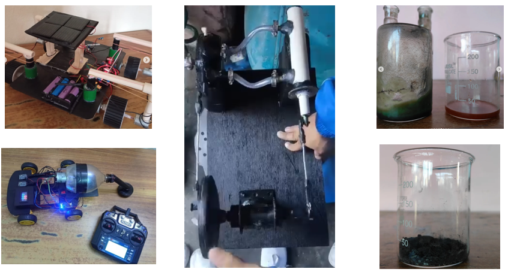

I am a Grade 11 student at St. Xavier’s College, Maitighar, driven by a deep discipline for learning and an intense curiosity about how the physical world works. A major milestone in my journey is being selected to represent my country at the Asia Pacific Conference of Young Scientists (APCYS) in Thailand. My ultimate academic dream i s to earn a full scholarship to top-tier global institutions, such as MIT or Ivy League universities. Looking forward, I plan to build a career in physics and am curren tly deciding between becoming an aerospace engineer or a theoretical physicist, with a strong focus on exploring quantum mechanics.
I completed my schooling at Nightingale International Secondary School, where I maintained a high standard of academic excellence, securing a perfect 4.0 GPA across Grades 8, 9, and 10. Now pur suing higher secondary education at St. Xavier's College, I focus on building a strong theoretical foundation in mathematics and physics. My approach to learning extend beyond classroom textbooks; I routinely read international research papers by leading scientists around the world to understand fundamental principles, complex mathematical modeling, and real-world scientific applications.
My interest in physics and math directly feeds my passion for hands-on experimentation. Studying academic research papers gives me unique insights that I translate into functional, innovative science projects. Over the years, I have conceptualized, designed, and presented numerous projects, earning top honors and awards in various inter-school and national-level science competitions and exhibitions. Representing my nation at the Asia Pacific Conference of Young Scientists marks an exciting continuation of this research path which is the first international competition where im participating.
Chess: Playing competitive chess. I have a 1800 rating on Chess.com and earned an international chess rating of around 1500 through national-level tournaments.
Music: Playing the guitar,which I have practiced for six years, and occasionally singing.

These are some of my projects.
This is the sound of the steam engine prototype that i constructed.
The working steam engine can be seen in the following video.